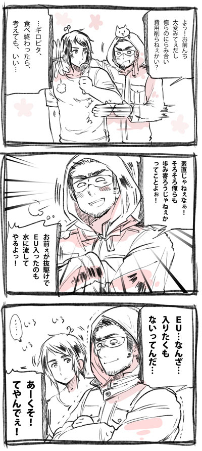

|
■EUとトルコさん■

このギリシャ危機でお互い経済厳しくなってる今だからこそ
いっせーのせ！で軍事費削ろうぜ！ってなったトルコさんとギリシャさん。
お互いがお互いを警戒しあってる姿勢を少し緩めたようです。
トルコさんは超初期からＥＵ入りたい入りたいと
アピールし続けてたのに未だに入れてもらえていない。
リーマンショックでマイナスに転じたトルコも
２０１０年２０１１年と頑張ってなかなか良い成長率に加えて
（ちょっと貿易赤字も多いんですが…）
ＥＵメンツと自由貿易するくらい密接になってきてるので
最近わりと注目されてるトルコさんでした。
しかしやっぱり１９７０年代から入りたいといってるのに
後から加入表明した国に抜かされまくるのは悲しいのか
トルコの観光案内の人も観光地に全く関係なくこの話ねじ込んでくる。
■黒幕■
【ドイツ黒幕説】
最近欧州の新聞やネットでまことしやかに語られている
「ドイツってＥＵにギリシャいれた時点で
絶対今回のこと予測できてたよな」
「じゃあ黒幕ってドイツなんじゃね！？」っていう説のこと。
黒幕もギリシャ砲受けまくりな時点で黒幕失格な気がしないでもない。
■バタークライシス！■
ノルウェイジャン・バタークライシス！と国内外で話題の
ノルウェーでバターダイエットが流行りすぎてバターが国内から消えたって言うニュース。
スウェーデンが警戒するほどバターの運び屋がわらわら出てきちゃったらしい。
そこでデンマークがノルウェーのクリスマスを救え！とばかりに
無償のバター支援をすることを決めたそう。
北欧は寒い国だけあって必要なカロリーも比較的高く
レーションなんかは高カロリー帝国のアメリカを
ぶっちぎって高カロリーのオンパレード。
バターを付け加えるだけならわりと消化できるものなのかも。
暖かいところでやるのはあまりお勧めできないが…。
バター不足の大きな原因は政府の失策でもあるみたい。
頑張れノルウェー政府！
「くんちょ」
茨城の方言の「してください」の一つ。
茨城ほど「してください」のバリエーションがある県もあるまい。
どのしてくださいも超可愛い。

|